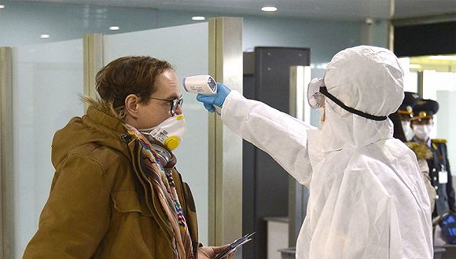

英国关闭全境酒吧餐厅，美国病例近2万、4州全民居家隔离
原文链接 备份链接 图片来源：IC Photo “ 全球新冠肺炎疫情播报，持续更新。 ” （本文持续更新中。点击左下角阅读原文，实时跟踪国际疫情动态。文中段首所示时间为本文更新时间。） 全球 0800【全球疫情汇总】 据新浪实时统计，截 …

全球
0800【全球疫情汇总】
据新浪实时统计，截至3月22日8点，除中国（包括港澳台地区）以外，海外新冠肺炎累计确诊220113例，死亡9614例，治愈21817例。

注：新增0表示当天暂未宣布数据。数据来源：新浪
0800【全球新冠肺炎确诊病例超30万，死亡超1.2万】
美国约翰斯·霍普金斯大学发布的实时统计数据显示，截至北京时间3月22日4时48分，全球新冠肺炎确诊病例达303001例，超过30万。死亡病例累计12762人。
0800【为遏制新冠肺炎疫情，全球将近10亿人足不出户】
包括政府下“居家令”要求足不出户的6亿人在内，世界各地35个国家有大约9亿多人待在家中。
0800【美国确诊新冠肺炎病例累计超过2.4万人，累计病例数居全球第四】
截至北京时间22日5时，美国确诊新冠肺炎病例累计24148例，死亡累计285例，治愈171例。除中国外，意大利、西班牙、德国及伊朗均破两万。美国确诊数已超过伊朗、德国，居全球第四。
0800【纽约州成为美国首个新冠肺炎确诊人数过万州】
0800【美国调用5500名国民卫队士兵参与抗疫】
相关数字有可能随时因疫情而变化。国民卫队的职责将包括个人防护用品培训和样本收集、响应准备、并对卫生和物流系统提供支持等。
0800【美国副总统将进行新冠病毒检测其办公室职员确诊】
当地时间3月21日，美国副总统、白宫应对新冠肺炎疫情特别工作组负责人彭斯表示，他和妻子将进行新冠病毒检测。就在前一天，彭斯的新闻秘书宣布，副总统办公室一名职员的检测结果呈阳性。
0800【加拿大新冠病毒感染病例增至1146例】
**
0800【意大利单日新增6557例确诊病例，累计确诊破5万】
意大利新增新冠肺炎确诊病例6557例，系单日最大增幅，新增死亡病例793例。累计确诊病例增至53578例，累计死亡病例达4825例。
0800【皇马前主席洛伦索-桑斯因新冠肺炎去世享年76岁】
0800【俄累计确诊306人已研发出改进型检测系统】
0800【法国卫生部长预计未来数日内疫情状况将会恶化】
0800【发现新冠肺炎疫情的歌诗达邮轮“炫目”号抵达意大利萨沃纳港】
目前船上共有718名旅客和约800名船员，其中84人正处于隔离状态。利古里亚大区民事防护局长詹佩德罗内说，该船已有719名乘客在法国马赛下船，其中有38人确诊感染新冠病毒。
0800【丹麦新增71例新冠肺炎确诊病例累计确诊1326例】
0800【荷兰新增637例新冠肺炎确诊病例累计达3631例】
0800【挪威新增211例新冠肺炎确诊病例累计确诊2150例】
0800【芬兰现首例新冠肺炎死亡病例累计确诊521例】
患者是一名老年人。
0800【冰岛新增64例新冠肺炎确诊病例累计确诊473例】
0800【越南将暂停外国人入境】
越南共报告94例新冠肺炎确诊病例，其中3月6日以来报告78例，多为境外输入性病例及其接触者。目前全国已有17例治愈出院。
0800【新冠肺炎恐慌导致斯里兰卡监狱暴动造成1死5伤】
截至21日晚，斯里兰卡共确诊新冠肺炎77例。斯总统府20晚宣布在全国范围内实行外出禁令，目前禁令已延长至24日。
0800【印度新增32例新冠肺炎确诊病例累计确诊315例】
0800【日本国内新冠肺炎确诊病例达1045例累计死亡36例】
0800【乌干达确诊首例新冠肺炎病例】
患者是一名36岁的乌干达男性，从迪拜搭乘埃塞俄比亚航空飞机抵达乌干达。官方已经追踪到所有搭乘同一班飞机的旅客。
0800【加纳出现首例新冠肺炎死亡病例】
死者为61岁的黎巴嫩公民，本月19日在加纳被检测出感染新冠病毒。
0800【摩洛哥新增10例新冠肺炎确诊病例累计确诊96例】
0800【埃及爱资哈尔清真寺停止集体礼拜活动】
此次暂停期限为两周。埃及卫生与人口部21日发表声明称，埃及新增新冠肺炎确诊病例9例累计确诊294例。
0800【以色列驻纽约领事馆一工作人员确诊患有新冠肺炎】
这名工人自我感觉身体状态稳定，已被隔离治疗。目前以色列本土新冠肺炎确诊病例为883例，这一数字正在快速增加中。
0800【黎巴嫩总理：安全部队将介入全国强制性封锁】
黎巴嫩进入疫情的暴发期，过去24小时内确诊人数增加67人，是自疫情在黎巴嫩出现以来单日人数增长最多的一天。当地时间21日晚，黎巴嫩总理哈桑·迪亚卜发表电视讲话，表示黎巴嫩安全部队将会介入并采取强制措施，禁止居民外出和集会。
0800【土耳其新增新冠肺炎确诊病例277例累计确诊947例】
0800【土耳其内政部：65岁以上老人不得离开住所】
土耳其卫生部长称，死亡的9例均为老年人。
0800【卡塔尔采取严厉措施防止新冠肺炎疫情扩散】
从即日起以法律形式禁止一切形式的集会，包括但不限于海滨大道、公园、公共海滩、社交集会等地点和场合。违反相关规定的人将面临被逮捕的风险，所有商家也都禁止营业，但外卖业务不受相应影响。该决定初步暂定两周，随后将对情况进行评估后决定是否延长。
0800【伊拉克新增6例新冠肺炎确诊病例累计确诊214例】
0800【澳总理：大多数病例源于美国抗疫举措步步升级】
据莫里森政府预计，澳新冠肺炎疫情最坏可能导致近15万人死亡。
0800【巴西累计确诊1128例新冠肺炎病例圣保罗等城市开建“方舱”医院】
目前政府正在加快检测试剂的生产，本周末政府将分发1万套检测试剂给各州的检测机构，接下来还将再分发500万套快速检测试剂，以提高检测量。

原文链接 备份链接 图片来源：IC Photo “ 全球新冠肺炎疫情播报，持续更新。 ” （本文持续更新中。点击左下角阅读原文，实时跟踪国际疫情动态。文中段首所示时间为本文更新时间。） 全球 0800【全球疫情汇总】 据新浪实时统计，截 …
原文链接 备份链接 图片来源：Kyodo News “ 全球新冠肺炎疫情播报，持续更新。 ” （本文持续更新中。文中段首所示时间为本文更新时间。） 全球 0800【全球疫情汇总】 据新浪实时统计，截至3月20日8点，除中国（包括港澳台地 …
原文链接 备份链接 图片来源：Kyoto News “ 全球新冠肺炎疫情播报，持续更新。 ” 全球 0800【全球疫情汇总】 据新浪实时统计，截至3月9日8点，除中国（包括港澳台地区）以外，海外新冠肺炎累计确诊28854例，死亡702例， …
原文链接 备份链接 图片来源：Kyodo News （本文持续更新中。文中段首所示时间为本文更新时间。） 意大利 0800【意大利紧急封锁伦巴第大区及11个省】 法令将持续到4月3日。 0800【单日新增1247例意大利新冠肺炎确诊病例升 …
原文链接 备份链接 图片来源：Kyodo News 作者：潘金花 “ 全球新冠肺炎疫情播报，持续更新。 ” 世卫组织 0800【中国境外共78个国家累计确诊新冠肺炎17637例】 据世卫组织3月5日发布的每日数据，截至欧洲中部时间3月5 …